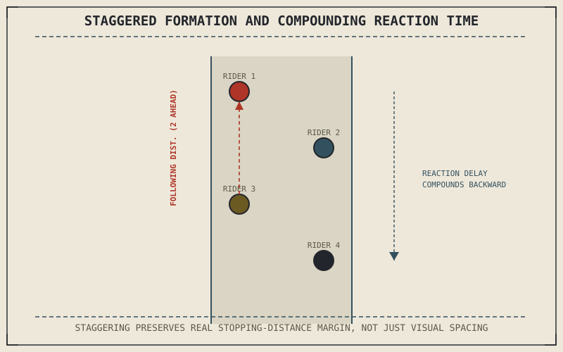

Chapter 9.9 established following distance as a calculation each rider performs individually, sized to their own stopping distance and reaction time. Group riding doesn't remove that calculation — it multiplies it, since every rider now has to account for the actions and reaction times of other riders ahead, not just a single vehicle they're following.
Chapter 9.14 closed by naming group riding as this chapter's subject, introducing considerations beyond a single rider's own inputs. This chapter covers it.
The Staggered Formation and Why It Preserves Chapter 9.9's Space Cushion
A staggered group formation — riders alternating between the left and right thirds of a lane rather than riding directly in line — exists specifically to let each rider maintain a genuine following distance from the rider two positions ahead, sized closer to Chapter 9.9's actual stopping-distance calculation, while still keeping the group visually and spatially compact. Riding directly behind the rider immediately ahead, at a distance that looks reasonable for a single following relationship, actually compounds risk across a group: if that immediate rider brakes hard, the distance available to react is set by their reaction time added to the following rider's own, not by either rider's stopping distance in isolation.
Reaction Time Compounds Down the Line
Chapter 9.9 built following distance from a single rider's own stopping distance plus their own reaction time. In a group, a sudden hazard or hard stop at the front doesn't reach the last rider instantly — it propagates backward through each rider's individual reaction time in sequence, meaning a rider several positions back in a tight, non-staggered line effectively faces a combined reaction-time delay from everyone ahead of them, not just their own. Wider spacing near the back of a group, or a smaller overall group size, are both direct, practical responses to this compounding effect.
A tight, single-file group doesn't just risk one rider's following distance — a hazard at the front has to propagate through every rider's individual reaction time before the last rider even begins to respond, compounding exactly the calculation Chapter 9.9 built for a single following relationship.

A staggered group riding formation shown with each rider positioned diagonally across the lane, with following-distance measurements drawn to the rider two positions ahead, and a reaction-time delay shown compounding backward through the group from a front hazard.
Predictability as a Group Skill
Because every rider in a group is, in effect, another rider's hazard to react to, smooth, predictable inputs — the throttle and brake smoothness Chapter 9.2 established as mechanically important for an individual rider's own tyre and drivetrain — become a group-level safety consideration too. Abrupt braking or acceleration doesn't just risk the individual rider's own friction circle; it demands an unplanned, urgent reaction from every rider following, compounding through the group the same way a genuine hazard would.
A Common Misconception, Cleared Up Early
It's a common assumption that riding closer together in a group signals better group cohesion or skill, treating tight spacing as a mark of a well-coordinated ride. Chapter 9.9's stopping-distance math doesn't change because other riders are nearby — closing that distance actually compounds risk through the reaction-time propagation this chapter described, and a well-organized group maintains generous, staggered spacing specifically because the underlying physics doesn't offer a discount for riding in formation.
Where This Leads
Group riding changes following distance and predictability requirements without changing the motorcycle's own load. Carrying a passenger or additional load directly changes the mass, center of gravity, and handling this book has assumed throughout. Chapter 9.16 turns to that next.
Key Concepts to Remember
- A staggered formation lets each rider maintain genuine following distance from the rider two positions ahead, closer to Chapter 9.9's actual stopping-distance calculation.
- A hazard at the front of a tight group compounds through every rider's individual reaction time before the last rider even begins to respond.
- Smooth, predictable brake and throttle inputs matter as a group-level safety consideration, not just for an individual rider's own tyre and drivetrain.
Cross-References
| ← Ch. 9.9 | Established individual following distance as stopping distance plus reaction time; this chapter multiplies that calculation across a group. |
| ← Ch. 9.2 | Established smooth control inputs as mechanically important individually; this chapter extends that same smoothness to group-level predictability. |
| → Ch. 9.16 | Covers carrying a passenger or load, directly changing the mass and handling this book has assumed throughout. |